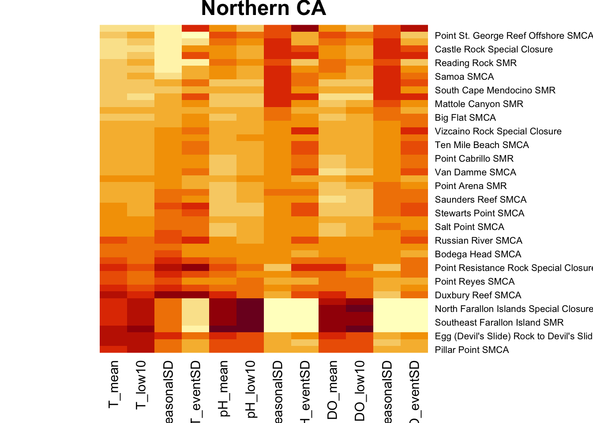
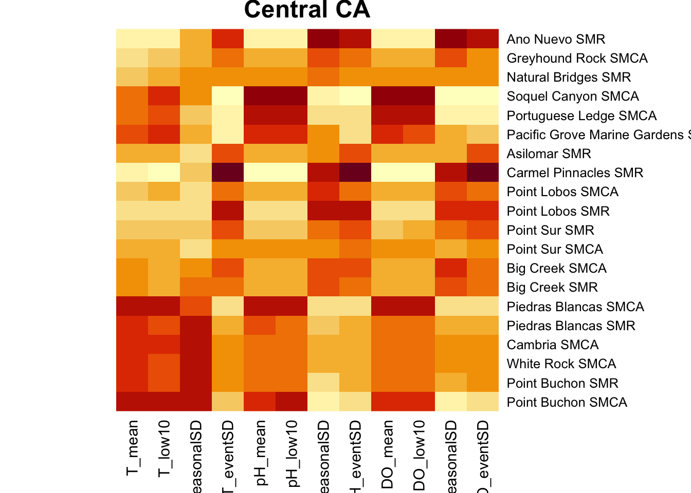

Code
library(tidyverse)
library(lubridate)
library(data.table)
library(factoextra)
library(broom)
library(cowplot)
library(respR)
library(here)
library(lattice)Code to characterize exposure of California MPAs to future pH, DO, and temperature using GFDL model predictions.
Load libraries and read data. Convert DO units and filter for years 2090-2100.
library(tidyverse)
library(lubridate)
library(data.table)
library(factoextra)
library(broom)
library(cowplot)
library(respR)
library(here)
library(lattice)#Read mpa data, convert DO units, filter for years 2090-2100
mpa <- read_csv(here("data/processeddata/GFDLmpa.csv")) %>%
mutate(DO_mmolL = DO_surf/1000,
DO_mgL = convert_DO(DO_mmolL, from = "mmol/L", to = "mg/L")) %>%
filter(Year >= 2090)Find mean and lower 10th percentile of pH, temp, and DO for each MPA
mpa_sum <- mpa %>%
group_by(File) %>%
summarize(across(c(T_surf, DO_mgL, pH_surf),
list(mean = mean, quantile = ~ quantile(.x, 0.1, na.rm = TRUE)))) %>%
rename(T_mean = T_surf_mean,
DO_mean = DO_mgL_mean,
pH_mean = pH_surf_mean,
T_low10 = T_surf_quantile,
DO_low10 = DO_mgL_quantile,
pH_low10 = pH_surf_quantile)Merge MPA centroids (has coords and names of MPAs) to the summary stats file and MPA file. Add regions.
mpa_centroids<- read.csv("~/Documents/Packard_MPA_Project/Data/MPA_data/MPA_polygons.csv")
mpa_centroids$File <- sub("^", "tphdo_mpa_", mpa_centroids$OBJECTID )
mpa_sum$File <- substr(mpa_sum$File, 1, nchar(mpa_sum$File)-4)
mpa$File <- substr(mpa$File, 1, nchar(mpa$File)-4)
mpa_sum <- merge(mpa_sum, mpa_centroids, by = "File")
mpa <- merge(mpa, mpa_centroids, by = "File")
mpa_sum <- mpa_sum %>%
mutate(region = ifelse(degy >= 37.29, "norca",
ifelse(degy > 34.8, "centralca",
ifelse("degy" < 34.274 & "degx" < -119.220, "channelisl" , "socal"))))
mpa <- mpa %>%
mutate(region = ifelse(degy >= 37.29, "norca",
ifelse(degy > 34.8, "centralca",
ifelse("degy" < 34.274 & "degx" < -119.220, "channelisl" ,
"socal"))))
channel <- c("Anacapa Island FMCA", "Anacapa Island FMR", "Anacapa Island SMCA", "Anacapa Island SMR", "Anacapa Island Special Closure",
"Arrow Point to Lion Head Point SMCA", "Begg Rock SMR", "Blue Cavern Offshore SMCA", "Blue Cavern Onshore SMCA (No-Take)",
"Carrington Point SMR", "Casino Point SMCA (No-Take)", "Cat Harbor SMCA", "Farnsworth Offshore SMCA", "Farnsworth Onshore SMCA",
"Footprint FMR", "Footprint SMR", "Gull Island FMR", "Gull Island SMR", "Harris Point FMR", "Harris Point SMR", "Judith Rock SMR",
"Long Point SMR", "Lover’s Cove SMCA", "Painted Cave SMCA", "Richardson Rock FMR", "Richardson Rock SMR", "San Miguel Island Special Closure",
"Santa Barbara Island FMR", "Santa Barbara Island SMR", "Scorpion FMR", "Scorpion SMR", "Skunk Point SMR", "South Point FMR", "South Point SMR")
mpa_sum$region[mpa_sum$NAME %in% channel] <- "channel"
mpa$region[mpa$NAME %in% channel] <- "channel"
mpa_centroids$region[mpa_centroids$NAME %in% channel] <- "channel" Create a climatology (Jan averaged over every year), so each MPA has one value per month that is averaged over all of the years. Find SD of this dataframe, to get seasonal variation.
mpa_climatology <- mpa %>%
group_by(File, Month) %>%
summarise(T_clim = mean(T_surf), pH_clim = mean(pH_surf), DO_clim = mean(DO_surf))`summarise()` has grouped output by 'File'. You can override using the `.groups`
argument.seasonalSD <- mpa_climatology %>%
group_by(File) %>%
summarise(T_seasonalSD = sd(T_clim),
pH_seasonalSD = sd(pH_clim),
DO_seasonalSD = sd(DO_clim))Create a mock dataset interpolating climatologies to get daily values in the absence of natural event-based variability. Subtract actual daily values. Find standard deviation of these differences (on a daily scale).
Setup for interpolation:
#First: Need to create a day1 and day365 proxies. Approx function can only interpolate not extrapolate so without this, you can interpolate days 1-14 and 350-365. #below creates empty vectors as big as we need (365 days per mpa) for each variable and each mpa. julianday is dates 1-365 as many mpa times
mpaslist = unique(mpa$File)
mpas = rep(NA, 365*121)
julianday = rep(1:365, 121)
T_clim = rep(NA, 365*121)
pH_clim = rep(NA, 365*121)
DO_clim = rep(NA, 365*121)
#Set up a vector of julian day assignment for the 15th of each month and the first and last day of the year
x_in <- yday(as.Date(c("2000-01-01", "2000-01-15","2000-02-15","2000-03-15","2000-04-15","2000-05-15","2000-06-15",
"2000-07-15","2000-08-15","2000-09-15","2000-10-15","2000-11-15","2000-12-15", "2000-12-31")))
# creating a list of all the days of the year not included in x_in to interpolate to.
x_out <- (1:365)
x_out <- x_out[!(x_out %in% x_in)] #removing the days of the year we already have values forInterpolation for temp:
for (i in 1:length(mpaslist)){
print(i)
d = mpa_climatology %>% filter(File == mpaslist[i]) %>% select(T_clim)
#use a weighted average to get these
Dec31 = as.numeric(( ((16/30) * (d[12,2])) + ((14/30) * d[1,2]) ))
Jan1 = as.numeric(( ((14/30) * (d[12,2])) + ((16/30) * d[1,2]) ))
# a list of y-values of the climatological temp on each of the days in x_in
y_in <- c(Jan1, d$T_clim, Dec31)
mod = approx(x = x_in, y = y_in, xout = x_out)
mpas[((i-1)*365+1):(i*365)] <- mpaslist[i] #rep(mpaslist[1], 365)
T_clim[((i-1)*365+1):(i*365)] <- mod$y
}[1] 1Warning in T_clim[((i - 1) * 365 + 1):(i * 365)] <- mod$y: number of items to
replace is not a multiple of replacement length[1] 2Warning in T_clim[((i - 1) * 365 + 1):(i * 365)] <- mod$y: number of items to
replace is not a multiple of replacement length[1] 3Warning in T_clim[((i - 1) * 365 + 1):(i * 365)] <- mod$y: number of items to
replace is not a multiple of replacement length[1] 4Warning in T_clim[((i - 1) * 365 + 1):(i * 365)] <- mod$y: number of items to
replace is not a multiple of replacement length[1] 5Warning in T_clim[((i - 1) * 365 + 1):(i * 365)] <- mod$y: number of items to
replace is not a multiple of replacement length[1] 6Warning in T_clim[((i - 1) * 365 + 1):(i * 365)] <- mod$y: number of items to
replace is not a multiple of replacement length[1] 7Warning in T_clim[((i - 1) * 365 + 1):(i * 365)] <- mod$y: number of items to
replace is not a multiple of replacement length[1] 8Warning in T_clim[((i - 1) * 365 + 1):(i * 365)] <- mod$y: number of items to
replace is not a multiple of replacement length[1] 9Warning in T_clim[((i - 1) * 365 + 1):(i * 365)] <- mod$y: number of items to
replace is not a multiple of replacement length[1] 10Warning in T_clim[((i - 1) * 365 + 1):(i * 365)] <- mod$y: number of items to
replace is not a multiple of replacement length[1] 11Warning in T_clim[((i - 1) * 365 + 1):(i * 365)] <- mod$y: number of items to
replace is not a multiple of replacement length[1] 12Warning in T_clim[((i - 1) * 365 + 1):(i * 365)] <- mod$y: number of items to
replace is not a multiple of replacement length[1] 13Warning in T_clim[((i - 1) * 365 + 1):(i * 365)] <- mod$y: number of items to
replace is not a multiple of replacement length[1] 14Warning in T_clim[((i - 1) * 365 + 1):(i * 365)] <- mod$y: number of items to
replace is not a multiple of replacement length[1] 15Warning in T_clim[((i - 1) * 365 + 1):(i * 365)] <- mod$y: number of items to
replace is not a multiple of replacement length[1] 16Warning in T_clim[((i - 1) * 365 + 1):(i * 365)] <- mod$y: number of items to
replace is not a multiple of replacement length[1] 17Warning in T_clim[((i - 1) * 365 + 1):(i * 365)] <- mod$y: number of items to
replace is not a multiple of replacement length[1] 18Warning in T_clim[((i - 1) * 365 + 1):(i * 365)] <- mod$y: number of items to
replace is not a multiple of replacement length[1] 19Warning in T_clim[((i - 1) * 365 + 1):(i * 365)] <- mod$y: number of items to
replace is not a multiple of replacement length[1] 20Warning in T_clim[((i - 1) * 365 + 1):(i * 365)] <- mod$y: number of items to
replace is not a multiple of replacement length[1] 21Warning in T_clim[((i - 1) * 365 + 1):(i * 365)] <- mod$y: number of items to
replace is not a multiple of replacement length[1] 22Warning in T_clim[((i - 1) * 365 + 1):(i * 365)] <- mod$y: number of items to
replace is not a multiple of replacement length[1] 23Warning in T_clim[((i - 1) * 365 + 1):(i * 365)] <- mod$y: number of items to
replace is not a multiple of replacement length[1] 24Warning in T_clim[((i - 1) * 365 + 1):(i * 365)] <- mod$y: number of items to
replace is not a multiple of replacement length[1] 25Warning in T_clim[((i - 1) * 365 + 1):(i * 365)] <- mod$y: number of items to
replace is not a multiple of replacement length[1] 26Warning in T_clim[((i - 1) * 365 + 1):(i * 365)] <- mod$y: number of items to
replace is not a multiple of replacement length[1] 27Warning in T_clim[((i - 1) * 365 + 1):(i * 365)] <- mod$y: number of items to
replace is not a multiple of replacement length[1] 28Warning in T_clim[((i - 1) * 365 + 1):(i * 365)] <- mod$y: number of items to
replace is not a multiple of replacement length[1] 29Warning in T_clim[((i - 1) * 365 + 1):(i * 365)] <- mod$y: number of items to
replace is not a multiple of replacement length[1] 30Warning in T_clim[((i - 1) * 365 + 1):(i * 365)] <- mod$y: number of items to
replace is not a multiple of replacement length[1] 31Warning in T_clim[((i - 1) * 365 + 1):(i * 365)] <- mod$y: number of items to
replace is not a multiple of replacement length[1] 32Warning in T_clim[((i - 1) * 365 + 1):(i * 365)] <- mod$y: number of items to
replace is not a multiple of replacement length[1] 33Warning in T_clim[((i - 1) * 365 + 1):(i * 365)] <- mod$y: number of items to
replace is not a multiple of replacement length[1] 34Warning in T_clim[((i - 1) * 365 + 1):(i * 365)] <- mod$y: number of items to
replace is not a multiple of replacement length[1] 35Warning in T_clim[((i - 1) * 365 + 1):(i * 365)] <- mod$y: number of items to
replace is not a multiple of replacement length[1] 36Warning in T_clim[((i - 1) * 365 + 1):(i * 365)] <- mod$y: number of items to
replace is not a multiple of replacement length[1] 37Warning in T_clim[((i - 1) * 365 + 1):(i * 365)] <- mod$y: number of items to
replace is not a multiple of replacement length[1] 38Warning in T_clim[((i - 1) * 365 + 1):(i * 365)] <- mod$y: number of items to
replace is not a multiple of replacement length[1] 39Warning in T_clim[((i - 1) * 365 + 1):(i * 365)] <- mod$y: number of items to
replace is not a multiple of replacement length[1] 40Warning in T_clim[((i - 1) * 365 + 1):(i * 365)] <- mod$y: number of items to
replace is not a multiple of replacement length[1] 41Warning in T_clim[((i - 1) * 365 + 1):(i * 365)] <- mod$y: number of items to
replace is not a multiple of replacement length[1] 42Warning in T_clim[((i - 1) * 365 + 1):(i * 365)] <- mod$y: number of items to
replace is not a multiple of replacement length[1] 43Warning in T_clim[((i - 1) * 365 + 1):(i * 365)] <- mod$y: number of items to
replace is not a multiple of replacement length[1] 44Warning in T_clim[((i - 1) * 365 + 1):(i * 365)] <- mod$y: number of items to
replace is not a multiple of replacement length[1] 45Warning in T_clim[((i - 1) * 365 + 1):(i * 365)] <- mod$y: number of items to
replace is not a multiple of replacement length[1] 46Warning in T_clim[((i - 1) * 365 + 1):(i * 365)] <- mod$y: number of items to
replace is not a multiple of replacement length[1] 47Warning in T_clim[((i - 1) * 365 + 1):(i * 365)] <- mod$y: number of items to
replace is not a multiple of replacement length[1] 48Warning in T_clim[((i - 1) * 365 + 1):(i * 365)] <- mod$y: number of items to
replace is not a multiple of replacement length[1] 49Warning in T_clim[((i - 1) * 365 + 1):(i * 365)] <- mod$y: number of items to
replace is not a multiple of replacement length[1] 50Warning in T_clim[((i - 1) * 365 + 1):(i * 365)] <- mod$y: number of items to
replace is not a multiple of replacement length[1] 51Warning in T_clim[((i - 1) * 365 + 1):(i * 365)] <- mod$y: number of items to
replace is not a multiple of replacement length[1] 52Warning in T_clim[((i - 1) * 365 + 1):(i * 365)] <- mod$y: number of items to
replace is not a multiple of replacement length[1] 53Warning in T_clim[((i - 1) * 365 + 1):(i * 365)] <- mod$y: number of items to
replace is not a multiple of replacement length[1] 54Warning in T_clim[((i - 1) * 365 + 1):(i * 365)] <- mod$y: number of items to
replace is not a multiple of replacement length[1] 55Warning in T_clim[((i - 1) * 365 + 1):(i * 365)] <- mod$y: number of items to
replace is not a multiple of replacement length[1] 56Warning in T_clim[((i - 1) * 365 + 1):(i * 365)] <- mod$y: number of items to
replace is not a multiple of replacement length[1] 57Warning in T_clim[((i - 1) * 365 + 1):(i * 365)] <- mod$y: number of items to
replace is not a multiple of replacement length[1] 58Warning in T_clim[((i - 1) * 365 + 1):(i * 365)] <- mod$y: number of items to
replace is not a multiple of replacement length[1] 59Warning in T_clim[((i - 1) * 365 + 1):(i * 365)] <- mod$y: number of items to
replace is not a multiple of replacement length[1] 60Warning in T_clim[((i - 1) * 365 + 1):(i * 365)] <- mod$y: number of items to
replace is not a multiple of replacement length[1] 61Warning in T_clim[((i - 1) * 365 + 1):(i * 365)] <- mod$y: number of items to
replace is not a multiple of replacement length[1] 62Warning in T_clim[((i - 1) * 365 + 1):(i * 365)] <- mod$y: number of items to
replace is not a multiple of replacement length[1] 63Warning in T_clim[((i - 1) * 365 + 1):(i * 365)] <- mod$y: number of items to
replace is not a multiple of replacement length[1] 64Warning in T_clim[((i - 1) * 365 + 1):(i * 365)] <- mod$y: number of items to
replace is not a multiple of replacement length[1] 65Warning in T_clim[((i - 1) * 365 + 1):(i * 365)] <- mod$y: number of items to
replace is not a multiple of replacement length[1] 66Warning in T_clim[((i - 1) * 365 + 1):(i * 365)] <- mod$y: number of items to
replace is not a multiple of replacement length[1] 67Warning in T_clim[((i - 1) * 365 + 1):(i * 365)] <- mod$y: number of items to
replace is not a multiple of replacement length[1] 68Warning in T_clim[((i - 1) * 365 + 1):(i * 365)] <- mod$y: number of items to
replace is not a multiple of replacement length[1] 69Warning in T_clim[((i - 1) * 365 + 1):(i * 365)] <- mod$y: number of items to
replace is not a multiple of replacement length[1] 70Warning in T_clim[((i - 1) * 365 + 1):(i * 365)] <- mod$y: number of items to
replace is not a multiple of replacement length[1] 71Warning in T_clim[((i - 1) * 365 + 1):(i * 365)] <- mod$y: number of items to
replace is not a multiple of replacement length[1] 72Warning in T_clim[((i - 1) * 365 + 1):(i * 365)] <- mod$y: number of items to
replace is not a multiple of replacement length[1] 73Warning in T_clim[((i - 1) * 365 + 1):(i * 365)] <- mod$y: number of items to
replace is not a multiple of replacement length[1] 74Warning in T_clim[((i - 1) * 365 + 1):(i * 365)] <- mod$y: number of items to
replace is not a multiple of replacement length[1] 75Warning in T_clim[((i - 1) * 365 + 1):(i * 365)] <- mod$y: number of items to
replace is not a multiple of replacement length[1] 76Warning in T_clim[((i - 1) * 365 + 1):(i * 365)] <- mod$y: number of items to
replace is not a multiple of replacement length[1] 77Warning in T_clim[((i - 1) * 365 + 1):(i * 365)] <- mod$y: number of items to
replace is not a multiple of replacement length[1] 78Warning in T_clim[((i - 1) * 365 + 1):(i * 365)] <- mod$y: number of items to
replace is not a multiple of replacement length[1] 79Warning in T_clim[((i - 1) * 365 + 1):(i * 365)] <- mod$y: number of items to
replace is not a multiple of replacement length[1] 80Warning in T_clim[((i - 1) * 365 + 1):(i * 365)] <- mod$y: number of items to
replace is not a multiple of replacement length[1] 81Warning in T_clim[((i - 1) * 365 + 1):(i * 365)] <- mod$y: number of items to
replace is not a multiple of replacement length[1] 82Warning in T_clim[((i - 1) * 365 + 1):(i * 365)] <- mod$y: number of items to
replace is not a multiple of replacement length[1] 83Warning in T_clim[((i - 1) * 365 + 1):(i * 365)] <- mod$y: number of items to
replace is not a multiple of replacement length[1] 84Warning in T_clim[((i - 1) * 365 + 1):(i * 365)] <- mod$y: number of items to
replace is not a multiple of replacement length[1] 85Warning in T_clim[((i - 1) * 365 + 1):(i * 365)] <- mod$y: number of items to
replace is not a multiple of replacement length[1] 86Warning in T_clim[((i - 1) * 365 + 1):(i * 365)] <- mod$y: number of items to
replace is not a multiple of replacement length[1] 87Warning in T_clim[((i - 1) * 365 + 1):(i * 365)] <- mod$y: number of items to
replace is not a multiple of replacement length[1] 88Warning in T_clim[((i - 1) * 365 + 1):(i * 365)] <- mod$y: number of items to
replace is not a multiple of replacement length[1] 89Warning in T_clim[((i - 1) * 365 + 1):(i * 365)] <- mod$y: number of items to
replace is not a multiple of replacement length[1] 90Warning in T_clim[((i - 1) * 365 + 1):(i * 365)] <- mod$y: number of items to
replace is not a multiple of replacement length[1] 91Warning in T_clim[((i - 1) * 365 + 1):(i * 365)] <- mod$y: number of items to
replace is not a multiple of replacement length[1] 92Warning in T_clim[((i - 1) * 365 + 1):(i * 365)] <- mod$y: number of items to
replace is not a multiple of replacement length[1] 93Warning in T_clim[((i - 1) * 365 + 1):(i * 365)] <- mod$y: number of items to
replace is not a multiple of replacement length[1] 94Warning in T_clim[((i - 1) * 365 + 1):(i * 365)] <- mod$y: number of items to
replace is not a multiple of replacement length[1] 95Warning in T_clim[((i - 1) * 365 + 1):(i * 365)] <- mod$y: number of items to
replace is not a multiple of replacement length[1] 96Warning in T_clim[((i - 1) * 365 + 1):(i * 365)] <- mod$y: number of items to
replace is not a multiple of replacement length[1] 97Warning in T_clim[((i - 1) * 365 + 1):(i * 365)] <- mod$y: number of items to
replace is not a multiple of replacement length[1] 98Warning in T_clim[((i - 1) * 365 + 1):(i * 365)] <- mod$y: number of items to
replace is not a multiple of replacement length[1] 99Warning in T_clim[((i - 1) * 365 + 1):(i * 365)] <- mod$y: number of items to
replace is not a multiple of replacement length[1] 100Warning in T_clim[((i - 1) * 365 + 1):(i * 365)] <- mod$y: number of items to
replace is not a multiple of replacement length[1] 101Warning in T_clim[((i - 1) * 365 + 1):(i * 365)] <- mod$y: number of items to
replace is not a multiple of replacement length[1] 102Warning in T_clim[((i - 1) * 365 + 1):(i * 365)] <- mod$y: number of items to
replace is not a multiple of replacement length[1] 103Warning in T_clim[((i - 1) * 365 + 1):(i * 365)] <- mod$y: number of items to
replace is not a multiple of replacement length[1] 104Warning in T_clim[((i - 1) * 365 + 1):(i * 365)] <- mod$y: number of items to
replace is not a multiple of replacement length[1] 105Warning in T_clim[((i - 1) * 365 + 1):(i * 365)] <- mod$y: number of items to
replace is not a multiple of replacement length[1] 106Warning in T_clim[((i - 1) * 365 + 1):(i * 365)] <- mod$y: number of items to
replace is not a multiple of replacement length[1] 107Warning in T_clim[((i - 1) * 365 + 1):(i * 365)] <- mod$y: number of items to
replace is not a multiple of replacement length[1] 108Warning in T_clim[((i - 1) * 365 + 1):(i * 365)] <- mod$y: number of items to
replace is not a multiple of replacement length[1] 109Warning in T_clim[((i - 1) * 365 + 1):(i * 365)] <- mod$y: number of items to
replace is not a multiple of replacement length[1] 110Warning in T_clim[((i - 1) * 365 + 1):(i * 365)] <- mod$y: number of items to
replace is not a multiple of replacement length[1] 111Warning in T_clim[((i - 1) * 365 + 1):(i * 365)] <- mod$y: number of items to
replace is not a multiple of replacement length[1] 112Warning in T_clim[((i - 1) * 365 + 1):(i * 365)] <- mod$y: number of items to
replace is not a multiple of replacement length[1] 113Warning in T_clim[((i - 1) * 365 + 1):(i * 365)] <- mod$y: number of items to
replace is not a multiple of replacement length[1] 114Warning in T_clim[((i - 1) * 365 + 1):(i * 365)] <- mod$y: number of items to
replace is not a multiple of replacement length[1] 115Warning in T_clim[((i - 1) * 365 + 1):(i * 365)] <- mod$y: number of items to
replace is not a multiple of replacement length[1] 116Warning in T_clim[((i - 1) * 365 + 1):(i * 365)] <- mod$y: number of items to
replace is not a multiple of replacement length[1] 117Warning in T_clim[((i - 1) * 365 + 1):(i * 365)] <- mod$y: number of items to
replace is not a multiple of replacement length[1] 118Warning in T_clim[((i - 1) * 365 + 1):(i * 365)] <- mod$y: number of items to
replace is not a multiple of replacement length[1] 119Warning in T_clim[((i - 1) * 365 + 1):(i * 365)] <- mod$y: number of items to
replace is not a multiple of replacement length[1] 120Warning in T_clim[((i - 1) * 365 + 1):(i * 365)] <- mod$y: number of items to
replace is not a multiple of replacement length[1] 121Warning in T_clim[((i - 1) * 365 + 1):(i * 365)] <- mod$y: number of items to
replace is not a multiple of replacement lengthtempdata = data.frame(mpas, julianday,T_clim)
tempdata <- tempdata %>%
rename(File = mpas)
#Later we create a julian day variable in our OG mpa dataset, to merge this to all the rows on the dataset by filename and day and then have the mean daily climatological value for each row. Interpolation for pH
for (i in 1:length(mpaslist)){
print(i)
d = mpa_climatology %>% filter(File == mpaslist[i]) %>% select(pH_clim)
Dec31 = as.numeric(( ((16/30) * (d[12,2])) + ((14/30) * d[1,2]) ))
Jan1 = as.numeric(( ((14/30) * (d[12,2])) + ((16/30) * d[1,2]) ))
y_in <- c(Jan1, d$pH_clim, Dec31)
mod = approx(x = x_in, y = y_in, xout = x_out)
mpas[((i-1)*365+1):(i*365)] <- mpaslist[i]
pH_clim[((i-1)*365+1):(i*365)] <- mod$y
}[1] 1Warning in pH_clim[((i - 1) * 365 + 1):(i * 365)] <- mod$y: number of items to
replace is not a multiple of replacement length[1] 2Warning in pH_clim[((i - 1) * 365 + 1):(i * 365)] <- mod$y: number of items to
replace is not a multiple of replacement length[1] 3Warning in pH_clim[((i - 1) * 365 + 1):(i * 365)] <- mod$y: number of items to
replace is not a multiple of replacement length[1] 4Warning in pH_clim[((i - 1) * 365 + 1):(i * 365)] <- mod$y: number of items to
replace is not a multiple of replacement length[1] 5Warning in pH_clim[((i - 1) * 365 + 1):(i * 365)] <- mod$y: number of items to
replace is not a multiple of replacement length[1] 6Warning in pH_clim[((i - 1) * 365 + 1):(i * 365)] <- mod$y: number of items to
replace is not a multiple of replacement length[1] 7Warning in pH_clim[((i - 1) * 365 + 1):(i * 365)] <- mod$y: number of items to
replace is not a multiple of replacement length[1] 8Warning in pH_clim[((i - 1) * 365 + 1):(i * 365)] <- mod$y: number of items to
replace is not a multiple of replacement length[1] 9Warning in pH_clim[((i - 1) * 365 + 1):(i * 365)] <- mod$y: number of items to
replace is not a multiple of replacement length[1] 10Warning in pH_clim[((i - 1) * 365 + 1):(i * 365)] <- mod$y: number of items to
replace is not a multiple of replacement length[1] 11Warning in pH_clim[((i - 1) * 365 + 1):(i * 365)] <- mod$y: number of items to
replace is not a multiple of replacement length[1] 12Warning in pH_clim[((i - 1) * 365 + 1):(i * 365)] <- mod$y: number of items to
replace is not a multiple of replacement length[1] 13Warning in pH_clim[((i - 1) * 365 + 1):(i * 365)] <- mod$y: number of items to
replace is not a multiple of replacement length[1] 14Warning in pH_clim[((i - 1) * 365 + 1):(i * 365)] <- mod$y: number of items to
replace is not a multiple of replacement length[1] 15Warning in pH_clim[((i - 1) * 365 + 1):(i * 365)] <- mod$y: number of items to
replace is not a multiple of replacement length[1] 16Warning in pH_clim[((i - 1) * 365 + 1):(i * 365)] <- mod$y: number of items to
replace is not a multiple of replacement length[1] 17Warning in pH_clim[((i - 1) * 365 + 1):(i * 365)] <- mod$y: number of items to
replace is not a multiple of replacement length[1] 18Warning in pH_clim[((i - 1) * 365 + 1):(i * 365)] <- mod$y: number of items to
replace is not a multiple of replacement length[1] 19Warning in pH_clim[((i - 1) * 365 + 1):(i * 365)] <- mod$y: number of items to
replace is not a multiple of replacement length[1] 20Warning in pH_clim[((i - 1) * 365 + 1):(i * 365)] <- mod$y: number of items to
replace is not a multiple of replacement length[1] 21Warning in pH_clim[((i - 1) * 365 + 1):(i * 365)] <- mod$y: number of items to
replace is not a multiple of replacement length[1] 22Warning in pH_clim[((i - 1) * 365 + 1):(i * 365)] <- mod$y: number of items to
replace is not a multiple of replacement length[1] 23Warning in pH_clim[((i - 1) * 365 + 1):(i * 365)] <- mod$y: number of items to
replace is not a multiple of replacement length[1] 24Warning in pH_clim[((i - 1) * 365 + 1):(i * 365)] <- mod$y: number of items to
replace is not a multiple of replacement length[1] 25Warning in pH_clim[((i - 1) * 365 + 1):(i * 365)] <- mod$y: number of items to
replace is not a multiple of replacement length[1] 26Warning in pH_clim[((i - 1) * 365 + 1):(i * 365)] <- mod$y: number of items to
replace is not a multiple of replacement length[1] 27Warning in pH_clim[((i - 1) * 365 + 1):(i * 365)] <- mod$y: number of items to
replace is not a multiple of replacement length[1] 28Warning in pH_clim[((i - 1) * 365 + 1):(i * 365)] <- mod$y: number of items to
replace is not a multiple of replacement length[1] 29Warning in pH_clim[((i - 1) * 365 + 1):(i * 365)] <- mod$y: number of items to
replace is not a multiple of replacement length[1] 30Warning in pH_clim[((i - 1) * 365 + 1):(i * 365)] <- mod$y: number of items to
replace is not a multiple of replacement length[1] 31Warning in pH_clim[((i - 1) * 365 + 1):(i * 365)] <- mod$y: number of items to
replace is not a multiple of replacement length[1] 32Warning in pH_clim[((i - 1) * 365 + 1):(i * 365)] <- mod$y: number of items to
replace is not a multiple of replacement length[1] 33Warning in pH_clim[((i - 1) * 365 + 1):(i * 365)] <- mod$y: number of items to
replace is not a multiple of replacement length[1] 34Warning in pH_clim[((i - 1) * 365 + 1):(i * 365)] <- mod$y: number of items to
replace is not a multiple of replacement length[1] 35Warning in pH_clim[((i - 1) * 365 + 1):(i * 365)] <- mod$y: number of items to
replace is not a multiple of replacement length[1] 36Warning in pH_clim[((i - 1) * 365 + 1):(i * 365)] <- mod$y: number of items to
replace is not a multiple of replacement length[1] 37Warning in pH_clim[((i - 1) * 365 + 1):(i * 365)] <- mod$y: number of items to
replace is not a multiple of replacement length[1] 38Warning in pH_clim[((i - 1) * 365 + 1):(i * 365)] <- mod$y: number of items to
replace is not a multiple of replacement length[1] 39Warning in pH_clim[((i - 1) * 365 + 1):(i * 365)] <- mod$y: number of items to
replace is not a multiple of replacement length[1] 40Warning in pH_clim[((i - 1) * 365 + 1):(i * 365)] <- mod$y: number of items to
replace is not a multiple of replacement length[1] 41Warning in pH_clim[((i - 1) * 365 + 1):(i * 365)] <- mod$y: number of items to
replace is not a multiple of replacement length[1] 42Warning in pH_clim[((i - 1) * 365 + 1):(i * 365)] <- mod$y: number of items to
replace is not a multiple of replacement length[1] 43Warning in pH_clim[((i - 1) * 365 + 1):(i * 365)] <- mod$y: number of items to
replace is not a multiple of replacement length[1] 44Warning in pH_clim[((i - 1) * 365 + 1):(i * 365)] <- mod$y: number of items to
replace is not a multiple of replacement length[1] 45Warning in pH_clim[((i - 1) * 365 + 1):(i * 365)] <- mod$y: number of items to
replace is not a multiple of replacement length[1] 46Warning in pH_clim[((i - 1) * 365 + 1):(i * 365)] <- mod$y: number of items to
replace is not a multiple of replacement length[1] 47Warning in pH_clim[((i - 1) * 365 + 1):(i * 365)] <- mod$y: number of items to
replace is not a multiple of replacement length[1] 48Warning in pH_clim[((i - 1) * 365 + 1):(i * 365)] <- mod$y: number of items to
replace is not a multiple of replacement length[1] 49Warning in pH_clim[((i - 1) * 365 + 1):(i * 365)] <- mod$y: number of items to
replace is not a multiple of replacement length[1] 50Warning in pH_clim[((i - 1) * 365 + 1):(i * 365)] <- mod$y: number of items to
replace is not a multiple of replacement length[1] 51Warning in pH_clim[((i - 1) * 365 + 1):(i * 365)] <- mod$y: number of items to
replace is not a multiple of replacement length[1] 52Warning in pH_clim[((i - 1) * 365 + 1):(i * 365)] <- mod$y: number of items to
replace is not a multiple of replacement length[1] 53Warning in pH_clim[((i - 1) * 365 + 1):(i * 365)] <- mod$y: number of items to
replace is not a multiple of replacement length[1] 54Warning in pH_clim[((i - 1) * 365 + 1):(i * 365)] <- mod$y: number of items to
replace is not a multiple of replacement length[1] 55Warning in pH_clim[((i - 1) * 365 + 1):(i * 365)] <- mod$y: number of items to
replace is not a multiple of replacement length[1] 56Warning in pH_clim[((i - 1) * 365 + 1):(i * 365)] <- mod$y: number of items to
replace is not a multiple of replacement length[1] 57Warning in pH_clim[((i - 1) * 365 + 1):(i * 365)] <- mod$y: number of items to
replace is not a multiple of replacement length[1] 58Warning in pH_clim[((i - 1) * 365 + 1):(i * 365)] <- mod$y: number of items to
replace is not a multiple of replacement length[1] 59Warning in pH_clim[((i - 1) * 365 + 1):(i * 365)] <- mod$y: number of items to
replace is not a multiple of replacement length[1] 60Warning in pH_clim[((i - 1) * 365 + 1):(i * 365)] <- mod$y: number of items to
replace is not a multiple of replacement length[1] 61Warning in pH_clim[((i - 1) * 365 + 1):(i * 365)] <- mod$y: number of items to
replace is not a multiple of replacement length[1] 62Warning in pH_clim[((i - 1) * 365 + 1):(i * 365)] <- mod$y: number of items to
replace is not a multiple of replacement length[1] 63Warning in pH_clim[((i - 1) * 365 + 1):(i * 365)] <- mod$y: number of items to
replace is not a multiple of replacement length[1] 64Warning in pH_clim[((i - 1) * 365 + 1):(i * 365)] <- mod$y: number of items to
replace is not a multiple of replacement length[1] 65Warning in pH_clim[((i - 1) * 365 + 1):(i * 365)] <- mod$y: number of items to
replace is not a multiple of replacement length[1] 66Warning in pH_clim[((i - 1) * 365 + 1):(i * 365)] <- mod$y: number of items to
replace is not a multiple of replacement length[1] 67Warning in pH_clim[((i - 1) * 365 + 1):(i * 365)] <- mod$y: number of items to
replace is not a multiple of replacement length[1] 68Warning in pH_clim[((i - 1) * 365 + 1):(i * 365)] <- mod$y: number of items to
replace is not a multiple of replacement length[1] 69Warning in pH_clim[((i - 1) * 365 + 1):(i * 365)] <- mod$y: number of items to
replace is not a multiple of replacement length[1] 70Warning in pH_clim[((i - 1) * 365 + 1):(i * 365)] <- mod$y: number of items to
replace is not a multiple of replacement length[1] 71Warning in pH_clim[((i - 1) * 365 + 1):(i * 365)] <- mod$y: number of items to
replace is not a multiple of replacement length[1] 72Warning in pH_clim[((i - 1) * 365 + 1):(i * 365)] <- mod$y: number of items to
replace is not a multiple of replacement length[1] 73Warning in pH_clim[((i - 1) * 365 + 1):(i * 365)] <- mod$y: number of items to
replace is not a multiple of replacement length[1] 74Warning in pH_clim[((i - 1) * 365 + 1):(i * 365)] <- mod$y: number of items to
replace is not a multiple of replacement length[1] 75Warning in pH_clim[((i - 1) * 365 + 1):(i * 365)] <- mod$y: number of items to
replace is not a multiple of replacement length[1] 76Warning in pH_clim[((i - 1) * 365 + 1):(i * 365)] <- mod$y: number of items to
replace is not a multiple of replacement length[1] 77Warning in pH_clim[((i - 1) * 365 + 1):(i * 365)] <- mod$y: number of items to
replace is not a multiple of replacement length[1] 78Warning in pH_clim[((i - 1) * 365 + 1):(i * 365)] <- mod$y: number of items to
replace is not a multiple of replacement length[1] 79Warning in pH_clim[((i - 1) * 365 + 1):(i * 365)] <- mod$y: number of items to
replace is not a multiple of replacement length[1] 80Warning in pH_clim[((i - 1) * 365 + 1):(i * 365)] <- mod$y: number of items to
replace is not a multiple of replacement length[1] 81Warning in pH_clim[((i - 1) * 365 + 1):(i * 365)] <- mod$y: number of items to
replace is not a multiple of replacement length[1] 82Warning in pH_clim[((i - 1) * 365 + 1):(i * 365)] <- mod$y: number of items to
replace is not a multiple of replacement length[1] 83Warning in pH_clim[((i - 1) * 365 + 1):(i * 365)] <- mod$y: number of items to
replace is not a multiple of replacement length[1] 84Warning in pH_clim[((i - 1) * 365 + 1):(i * 365)] <- mod$y: number of items to
replace is not a multiple of replacement length[1] 85Warning in pH_clim[((i - 1) * 365 + 1):(i * 365)] <- mod$y: number of items to
replace is not a multiple of replacement length[1] 86Warning in pH_clim[((i - 1) * 365 + 1):(i * 365)] <- mod$y: number of items to
replace is not a multiple of replacement length[1] 87Warning in pH_clim[((i - 1) * 365 + 1):(i * 365)] <- mod$y: number of items to
replace is not a multiple of replacement length[1] 88Warning in pH_clim[((i - 1) * 365 + 1):(i * 365)] <- mod$y: number of items to
replace is not a multiple of replacement length[1] 89Warning in pH_clim[((i - 1) * 365 + 1):(i * 365)] <- mod$y: number of items to
replace is not a multiple of replacement length[1] 90Warning in pH_clim[((i - 1) * 365 + 1):(i * 365)] <- mod$y: number of items to
replace is not a multiple of replacement length[1] 91Warning in pH_clim[((i - 1) * 365 + 1):(i * 365)] <- mod$y: number of items to
replace is not a multiple of replacement length[1] 92Warning in pH_clim[((i - 1) * 365 + 1):(i * 365)] <- mod$y: number of items to
replace is not a multiple of replacement length[1] 93Warning in pH_clim[((i - 1) * 365 + 1):(i * 365)] <- mod$y: number of items to
replace is not a multiple of replacement length[1] 94Warning in pH_clim[((i - 1) * 365 + 1):(i * 365)] <- mod$y: number of items to
replace is not a multiple of replacement length[1] 95Warning in pH_clim[((i - 1) * 365 + 1):(i * 365)] <- mod$y: number of items to
replace is not a multiple of replacement length[1] 96Warning in pH_clim[((i - 1) * 365 + 1):(i * 365)] <- mod$y: number of items to
replace is not a multiple of replacement length[1] 97Warning in pH_clim[((i - 1) * 365 + 1):(i * 365)] <- mod$y: number of items to
replace is not a multiple of replacement length[1] 98Warning in pH_clim[((i - 1) * 365 + 1):(i * 365)] <- mod$y: number of items to
replace is not a multiple of replacement length[1] 99Warning in pH_clim[((i - 1) * 365 + 1):(i * 365)] <- mod$y: number of items to
replace is not a multiple of replacement length[1] 100Warning in pH_clim[((i - 1) * 365 + 1):(i * 365)] <- mod$y: number of items to
replace is not a multiple of replacement length[1] 101Warning in pH_clim[((i - 1) * 365 + 1):(i * 365)] <- mod$y: number of items to
replace is not a multiple of replacement length[1] 102Warning in pH_clim[((i - 1) * 365 + 1):(i * 365)] <- mod$y: number of items to
replace is not a multiple of replacement length[1] 103Warning in pH_clim[((i - 1) * 365 + 1):(i * 365)] <- mod$y: number of items to
replace is not a multiple of replacement length[1] 104Warning in pH_clim[((i - 1) * 365 + 1):(i * 365)] <- mod$y: number of items to
replace is not a multiple of replacement length[1] 105Warning in pH_clim[((i - 1) * 365 + 1):(i * 365)] <- mod$y: number of items to
replace is not a multiple of replacement length[1] 106Warning in pH_clim[((i - 1) * 365 + 1):(i * 365)] <- mod$y: number of items to
replace is not a multiple of replacement length[1] 107Warning in pH_clim[((i - 1) * 365 + 1):(i * 365)] <- mod$y: number of items to
replace is not a multiple of replacement length[1] 108Warning in pH_clim[((i - 1) * 365 + 1):(i * 365)] <- mod$y: number of items to
replace is not a multiple of replacement length[1] 109Warning in pH_clim[((i - 1) * 365 + 1):(i * 365)] <- mod$y: number of items to
replace is not a multiple of replacement length[1] 110Warning in pH_clim[((i - 1) * 365 + 1):(i * 365)] <- mod$y: number of items to
replace is not a multiple of replacement length[1] 111Warning in pH_clim[((i - 1) * 365 + 1):(i * 365)] <- mod$y: number of items to
replace is not a multiple of replacement length[1] 112Warning in pH_clim[((i - 1) * 365 + 1):(i * 365)] <- mod$y: number of items to
replace is not a multiple of replacement length[1] 113Warning in pH_clim[((i - 1) * 365 + 1):(i * 365)] <- mod$y: number of items to
replace is not a multiple of replacement length[1] 114Warning in pH_clim[((i - 1) * 365 + 1):(i * 365)] <- mod$y: number of items to
replace is not a multiple of replacement length[1] 115Warning in pH_clim[((i - 1) * 365 + 1):(i * 365)] <- mod$y: number of items to
replace is not a multiple of replacement length[1] 116Warning in pH_clim[((i - 1) * 365 + 1):(i * 365)] <- mod$y: number of items to
replace is not a multiple of replacement length[1] 117Warning in pH_clim[((i - 1) * 365 + 1):(i * 365)] <- mod$y: number of items to
replace is not a multiple of replacement length[1] 118Warning in pH_clim[((i - 1) * 365 + 1):(i * 365)] <- mod$y: number of items to
replace is not a multiple of replacement length[1] 119Warning in pH_clim[((i - 1) * 365 + 1):(i * 365)] <- mod$y: number of items to
replace is not a multiple of replacement length[1] 120Warning in pH_clim[((i - 1) * 365 + 1):(i * 365)] <- mod$y: number of items to
replace is not a multiple of replacement length[1] 121Warning in pH_clim[((i - 1) * 365 + 1):(i * 365)] <- mod$y: number of items to
replace is not a multiple of replacement lengthpHdata = data.frame(mpas, julianday,pH_clim)
pHdata <- pHdata %>%
rename(File = mpas)Interpolation for DO:
for (i in 1:length(mpaslist)){
print(i)
d = mpa_climatology %>% filter(File == mpaslist[i]) %>% select(DO_clim)
Dec31 = as.numeric(( ((16/30) * (d[12,2])) + ((14/30) * d[1,2]) ))
Jan1 = as.numeric(( ((14/30) * (d[12,2])) + ((16/30) * d[1,2]) ))
y_in <- c(Jan1, d$DO_clim, Dec31)
mod = approx(x = x_in, y = y_in, xout = x_out)
mpas[((i-1)*365+1):(i*365)] <- mpaslist[i]
DO_clim[((i-1)*365+1):(i*365)] <- mod$y
}[1] 1Warning in DO_clim[((i - 1) * 365 + 1):(i * 365)] <- mod$y: number of items to
replace is not a multiple of replacement length[1] 2Warning in DO_clim[((i - 1) * 365 + 1):(i * 365)] <- mod$y: number of items to
replace is not a multiple of replacement length[1] 3Warning in DO_clim[((i - 1) * 365 + 1):(i * 365)] <- mod$y: number of items to
replace is not a multiple of replacement length[1] 4Warning in DO_clim[((i - 1) * 365 + 1):(i * 365)] <- mod$y: number of items to
replace is not a multiple of replacement length[1] 5Warning in DO_clim[((i - 1) * 365 + 1):(i * 365)] <- mod$y: number of items to
replace is not a multiple of replacement length[1] 6Warning in DO_clim[((i - 1) * 365 + 1):(i * 365)] <- mod$y: number of items to
replace is not a multiple of replacement length[1] 7Warning in DO_clim[((i - 1) * 365 + 1):(i * 365)] <- mod$y: number of items to
replace is not a multiple of replacement length[1] 8Warning in DO_clim[((i - 1) * 365 + 1):(i * 365)] <- mod$y: number of items to
replace is not a multiple of replacement length[1] 9Warning in DO_clim[((i - 1) * 365 + 1):(i * 365)] <- mod$y: number of items to
replace is not a multiple of replacement length[1] 10Warning in DO_clim[((i - 1) * 365 + 1):(i * 365)] <- mod$y: number of items to
replace is not a multiple of replacement length[1] 11Warning in DO_clim[((i - 1) * 365 + 1):(i * 365)] <- mod$y: number of items to
replace is not a multiple of replacement length[1] 12Warning in DO_clim[((i - 1) * 365 + 1):(i * 365)] <- mod$y: number of items to
replace is not a multiple of replacement length[1] 13Warning in DO_clim[((i - 1) * 365 + 1):(i * 365)] <- mod$y: number of items to
replace is not a multiple of replacement length[1] 14Warning in DO_clim[((i - 1) * 365 + 1):(i * 365)] <- mod$y: number of items to
replace is not a multiple of replacement length[1] 15Warning in DO_clim[((i - 1) * 365 + 1):(i * 365)] <- mod$y: number of items to
replace is not a multiple of replacement length[1] 16Warning in DO_clim[((i - 1) * 365 + 1):(i * 365)] <- mod$y: number of items to
replace is not a multiple of replacement length[1] 17Warning in DO_clim[((i - 1) * 365 + 1):(i * 365)] <- mod$y: number of items to
replace is not a multiple of replacement length[1] 18Warning in DO_clim[((i - 1) * 365 + 1):(i * 365)] <- mod$y: number of items to
replace is not a multiple of replacement length[1] 19Warning in DO_clim[((i - 1) * 365 + 1):(i * 365)] <- mod$y: number of items to
replace is not a multiple of replacement length[1] 20Warning in DO_clim[((i - 1) * 365 + 1):(i * 365)] <- mod$y: number of items to
replace is not a multiple of replacement length[1] 21Warning in DO_clim[((i - 1) * 365 + 1):(i * 365)] <- mod$y: number of items to
replace is not a multiple of replacement length[1] 22Warning in DO_clim[((i - 1) * 365 + 1):(i * 365)] <- mod$y: number of items to
replace is not a multiple of replacement length[1] 23Warning in DO_clim[((i - 1) * 365 + 1):(i * 365)] <- mod$y: number of items to
replace is not a multiple of replacement length[1] 24Warning in DO_clim[((i - 1) * 365 + 1):(i * 365)] <- mod$y: number of items to
replace is not a multiple of replacement length[1] 25Warning in DO_clim[((i - 1) * 365 + 1):(i * 365)] <- mod$y: number of items to
replace is not a multiple of replacement length[1] 26Warning in DO_clim[((i - 1) * 365 + 1):(i * 365)] <- mod$y: number of items to
replace is not a multiple of replacement length[1] 27Warning in DO_clim[((i - 1) * 365 + 1):(i * 365)] <- mod$y: number of items to
replace is not a multiple of replacement length[1] 28Warning in DO_clim[((i - 1) * 365 + 1):(i * 365)] <- mod$y: number of items to
replace is not a multiple of replacement length[1] 29Warning in DO_clim[((i - 1) * 365 + 1):(i * 365)] <- mod$y: number of items to
replace is not a multiple of replacement length[1] 30Warning in DO_clim[((i - 1) * 365 + 1):(i * 365)] <- mod$y: number of items to
replace is not a multiple of replacement length[1] 31Warning in DO_clim[((i - 1) * 365 + 1):(i * 365)] <- mod$y: number of items to
replace is not a multiple of replacement length[1] 32Warning in DO_clim[((i - 1) * 365 + 1):(i * 365)] <- mod$y: number of items to
replace is not a multiple of replacement length[1] 33Warning in DO_clim[((i - 1) * 365 + 1):(i * 365)] <- mod$y: number of items to
replace is not a multiple of replacement length[1] 34Warning in DO_clim[((i - 1) * 365 + 1):(i * 365)] <- mod$y: number of items to
replace is not a multiple of replacement length[1] 35Warning in DO_clim[((i - 1) * 365 + 1):(i * 365)] <- mod$y: number of items to
replace is not a multiple of replacement length[1] 36Warning in DO_clim[((i - 1) * 365 + 1):(i * 365)] <- mod$y: number of items to
replace is not a multiple of replacement length[1] 37Warning in DO_clim[((i - 1) * 365 + 1):(i * 365)] <- mod$y: number of items to
replace is not a multiple of replacement length[1] 38Warning in DO_clim[((i - 1) * 365 + 1):(i * 365)] <- mod$y: number of items to
replace is not a multiple of replacement length[1] 39Warning in DO_clim[((i - 1) * 365 + 1):(i * 365)] <- mod$y: number of items to
replace is not a multiple of replacement length[1] 40Warning in DO_clim[((i - 1) * 365 + 1):(i * 365)] <- mod$y: number of items to
replace is not a multiple of replacement length[1] 41Warning in DO_clim[((i - 1) * 365 + 1):(i * 365)] <- mod$y: number of items to
replace is not a multiple of replacement length[1] 42Warning in DO_clim[((i - 1) * 365 + 1):(i * 365)] <- mod$y: number of items to
replace is not a multiple of replacement length[1] 43Warning in DO_clim[((i - 1) * 365 + 1):(i * 365)] <- mod$y: number of items to
replace is not a multiple of replacement length[1] 44Warning in DO_clim[((i - 1) * 365 + 1):(i * 365)] <- mod$y: number of items to
replace is not a multiple of replacement length[1] 45Warning in DO_clim[((i - 1) * 365 + 1):(i * 365)] <- mod$y: number of items to
replace is not a multiple of replacement length[1] 46Warning in DO_clim[((i - 1) * 365 + 1):(i * 365)] <- mod$y: number of items to
replace is not a multiple of replacement length[1] 47Warning in DO_clim[((i - 1) * 365 + 1):(i * 365)] <- mod$y: number of items to
replace is not a multiple of replacement length[1] 48Warning in DO_clim[((i - 1) * 365 + 1):(i * 365)] <- mod$y: number of items to
replace is not a multiple of replacement length[1] 49Warning in DO_clim[((i - 1) * 365 + 1):(i * 365)] <- mod$y: number of items to
replace is not a multiple of replacement length[1] 50Warning in DO_clim[((i - 1) * 365 + 1):(i * 365)] <- mod$y: number of items to
replace is not a multiple of replacement length[1] 51Warning in DO_clim[((i - 1) * 365 + 1):(i * 365)] <- mod$y: number of items to
replace is not a multiple of replacement length[1] 52Warning in DO_clim[((i - 1) * 365 + 1):(i * 365)] <- mod$y: number of items to
replace is not a multiple of replacement length[1] 53Warning in DO_clim[((i - 1) * 365 + 1):(i * 365)] <- mod$y: number of items to
replace is not a multiple of replacement length[1] 54Warning in DO_clim[((i - 1) * 365 + 1):(i * 365)] <- mod$y: number of items to
replace is not a multiple of replacement length[1] 55Warning in DO_clim[((i - 1) * 365 + 1):(i * 365)] <- mod$y: number of items to
replace is not a multiple of replacement length[1] 56Warning in DO_clim[((i - 1) * 365 + 1):(i * 365)] <- mod$y: number of items to
replace is not a multiple of replacement length[1] 57Warning in DO_clim[((i - 1) * 365 + 1):(i * 365)] <- mod$y: number of items to
replace is not a multiple of replacement length[1] 58Warning in DO_clim[((i - 1) * 365 + 1):(i * 365)] <- mod$y: number of items to
replace is not a multiple of replacement length[1] 59Warning in DO_clim[((i - 1) * 365 + 1):(i * 365)] <- mod$y: number of items to
replace is not a multiple of replacement length[1] 60Warning in DO_clim[((i - 1) * 365 + 1):(i * 365)] <- mod$y: number of items to
replace is not a multiple of replacement length[1] 61Warning in DO_clim[((i - 1) * 365 + 1):(i * 365)] <- mod$y: number of items to
replace is not a multiple of replacement length[1] 62Warning in DO_clim[((i - 1) * 365 + 1):(i * 365)] <- mod$y: number of items to
replace is not a multiple of replacement length[1] 63Warning in DO_clim[((i - 1) * 365 + 1):(i * 365)] <- mod$y: number of items to
replace is not a multiple of replacement length[1] 64Warning in DO_clim[((i - 1) * 365 + 1):(i * 365)] <- mod$y: number of items to
replace is not a multiple of replacement length[1] 65Warning in DO_clim[((i - 1) * 365 + 1):(i * 365)] <- mod$y: number of items to
replace is not a multiple of replacement length[1] 66Warning in DO_clim[((i - 1) * 365 + 1):(i * 365)] <- mod$y: number of items to
replace is not a multiple of replacement length[1] 67Warning in DO_clim[((i - 1) * 365 + 1):(i * 365)] <- mod$y: number of items to
replace is not a multiple of replacement length[1] 68Warning in DO_clim[((i - 1) * 365 + 1):(i * 365)] <- mod$y: number of items to
replace is not a multiple of replacement length[1] 69Warning in DO_clim[((i - 1) * 365 + 1):(i * 365)] <- mod$y: number of items to
replace is not a multiple of replacement length[1] 70Warning in DO_clim[((i - 1) * 365 + 1):(i * 365)] <- mod$y: number of items to
replace is not a multiple of replacement length[1] 71Warning in DO_clim[((i - 1) * 365 + 1):(i * 365)] <- mod$y: number of items to
replace is not a multiple of replacement length[1] 72Warning in DO_clim[((i - 1) * 365 + 1):(i * 365)] <- mod$y: number of items to
replace is not a multiple of replacement length[1] 73Warning in DO_clim[((i - 1) * 365 + 1):(i * 365)] <- mod$y: number of items to
replace is not a multiple of replacement length[1] 74Warning in DO_clim[((i - 1) * 365 + 1):(i * 365)] <- mod$y: number of items to
replace is not a multiple of replacement length[1] 75Warning in DO_clim[((i - 1) * 365 + 1):(i * 365)] <- mod$y: number of items to
replace is not a multiple of replacement length[1] 76Warning in DO_clim[((i - 1) * 365 + 1):(i * 365)] <- mod$y: number of items to
replace is not a multiple of replacement length[1] 77Warning in DO_clim[((i - 1) * 365 + 1):(i * 365)] <- mod$y: number of items to
replace is not a multiple of replacement length[1] 78Warning in DO_clim[((i - 1) * 365 + 1):(i * 365)] <- mod$y: number of items to
replace is not a multiple of replacement length[1] 79Warning in DO_clim[((i - 1) * 365 + 1):(i * 365)] <- mod$y: number of items to
replace is not a multiple of replacement length[1] 80Warning in DO_clim[((i - 1) * 365 + 1):(i * 365)] <- mod$y: number of items to
replace is not a multiple of replacement length[1] 81Warning in DO_clim[((i - 1) * 365 + 1):(i * 365)] <- mod$y: number of items to
replace is not a multiple of replacement length[1] 82Warning in DO_clim[((i - 1) * 365 + 1):(i * 365)] <- mod$y: number of items to
replace is not a multiple of replacement length[1] 83Warning in DO_clim[((i - 1) * 365 + 1):(i * 365)] <- mod$y: number of items to
replace is not a multiple of replacement length[1] 84Warning in DO_clim[((i - 1) * 365 + 1):(i * 365)] <- mod$y: number of items to
replace is not a multiple of replacement length[1] 85Warning in DO_clim[((i - 1) * 365 + 1):(i * 365)] <- mod$y: number of items to
replace is not a multiple of replacement length[1] 86Warning in DO_clim[((i - 1) * 365 + 1):(i * 365)] <- mod$y: number of items to
replace is not a multiple of replacement length[1] 87Warning in DO_clim[((i - 1) * 365 + 1):(i * 365)] <- mod$y: number of items to
replace is not a multiple of replacement length[1] 88Warning in DO_clim[((i - 1) * 365 + 1):(i * 365)] <- mod$y: number of items to
replace is not a multiple of replacement length[1] 89Warning in DO_clim[((i - 1) * 365 + 1):(i * 365)] <- mod$y: number of items to
replace is not a multiple of replacement length[1] 90Warning in DO_clim[((i - 1) * 365 + 1):(i * 365)] <- mod$y: number of items to
replace is not a multiple of replacement length[1] 91Warning in DO_clim[((i - 1) * 365 + 1):(i * 365)] <- mod$y: number of items to
replace is not a multiple of replacement length[1] 92Warning in DO_clim[((i - 1) * 365 + 1):(i * 365)] <- mod$y: number of items to
replace is not a multiple of replacement length[1] 93Warning in DO_clim[((i - 1) * 365 + 1):(i * 365)] <- mod$y: number of items to
replace is not a multiple of replacement length[1] 94Warning in DO_clim[((i - 1) * 365 + 1):(i * 365)] <- mod$y: number of items to
replace is not a multiple of replacement length[1] 95Warning in DO_clim[((i - 1) * 365 + 1):(i * 365)] <- mod$y: number of items to
replace is not a multiple of replacement length[1] 96Warning in DO_clim[((i - 1) * 365 + 1):(i * 365)] <- mod$y: number of items to
replace is not a multiple of replacement length[1] 97Warning in DO_clim[((i - 1) * 365 + 1):(i * 365)] <- mod$y: number of items to
replace is not a multiple of replacement length[1] 98Warning in DO_clim[((i - 1) * 365 + 1):(i * 365)] <- mod$y: number of items to
replace is not a multiple of replacement length[1] 99Warning in DO_clim[((i - 1) * 365 + 1):(i * 365)] <- mod$y: number of items to
replace is not a multiple of replacement length[1] 100Warning in DO_clim[((i - 1) * 365 + 1):(i * 365)] <- mod$y: number of items to
replace is not a multiple of replacement length[1] 101Warning in DO_clim[((i - 1) * 365 + 1):(i * 365)] <- mod$y: number of items to
replace is not a multiple of replacement length[1] 102Warning in DO_clim[((i - 1) * 365 + 1):(i * 365)] <- mod$y: number of items to
replace is not a multiple of replacement length[1] 103Warning in DO_clim[((i - 1) * 365 + 1):(i * 365)] <- mod$y: number of items to
replace is not a multiple of replacement length[1] 104Warning in DO_clim[((i - 1) * 365 + 1):(i * 365)] <- mod$y: number of items to
replace is not a multiple of replacement length[1] 105Warning in DO_clim[((i - 1) * 365 + 1):(i * 365)] <- mod$y: number of items to
replace is not a multiple of replacement length[1] 106Warning in DO_clim[((i - 1) * 365 + 1):(i * 365)] <- mod$y: number of items to
replace is not a multiple of replacement length[1] 107Warning in DO_clim[((i - 1) * 365 + 1):(i * 365)] <- mod$y: number of items to
replace is not a multiple of replacement length[1] 108Warning in DO_clim[((i - 1) * 365 + 1):(i * 365)] <- mod$y: number of items to
replace is not a multiple of replacement length[1] 109Warning in DO_clim[((i - 1) * 365 + 1):(i * 365)] <- mod$y: number of items to
replace is not a multiple of replacement length[1] 110Warning in DO_clim[((i - 1) * 365 + 1):(i * 365)] <- mod$y: number of items to
replace is not a multiple of replacement length[1] 111Warning in DO_clim[((i - 1) * 365 + 1):(i * 365)] <- mod$y: number of items to
replace is not a multiple of replacement length[1] 112Warning in DO_clim[((i - 1) * 365 + 1):(i * 365)] <- mod$y: number of items to
replace is not a multiple of replacement length[1] 113Warning in DO_clim[((i - 1) * 365 + 1):(i * 365)] <- mod$y: number of items to
replace is not a multiple of replacement length[1] 114Warning in DO_clim[((i - 1) * 365 + 1):(i * 365)] <- mod$y: number of items to
replace is not a multiple of replacement length[1] 115Warning in DO_clim[((i - 1) * 365 + 1):(i * 365)] <- mod$y: number of items to
replace is not a multiple of replacement length[1] 116Warning in DO_clim[((i - 1) * 365 + 1):(i * 365)] <- mod$y: number of items to
replace is not a multiple of replacement length[1] 117Warning in DO_clim[((i - 1) * 365 + 1):(i * 365)] <- mod$y: number of items to
replace is not a multiple of replacement length[1] 118Warning in DO_clim[((i - 1) * 365 + 1):(i * 365)] <- mod$y: number of items to
replace is not a multiple of replacement length[1] 119Warning in DO_clim[((i - 1) * 365 + 1):(i * 365)] <- mod$y: number of items to
replace is not a multiple of replacement length[1] 120Warning in DO_clim[((i - 1) * 365 + 1):(i * 365)] <- mod$y: number of items to
replace is not a multiple of replacement length[1] 121Warning in DO_clim[((i - 1) * 365 + 1):(i * 365)] <- mod$y: number of items to
replace is not a multiple of replacement lengthDOdata = data.frame(mpas, julianday,DO_clim)
DOdata <- DOdata %>%
rename(File = mpas)Merge interpolated values to MPA dataset and find SD
#adding julianday variable
mpa <- mpa %>%
mutate(Date = make_date(Year, Month, Day)) %>%
mutate(julianday = yday(Date))
#mpa merge to ph/do/temp
merged <- merge(mpa, tempdata, by = c("File", "julianday"))
merged <- merge(merged, DOdata, by = c("File", "julianday"))
merged <- merge(merged, pHdata, by = c("File", "julianday"))
#subtract climatology . clim - actual
merged <- merged %>%
mutate(noclim_T = T_clim - T_surf,
noclim_pH = pH_clim - pH_surf,
noclim_DO = DO_clim - DO_surf)
mpa <- mpa %>%
select(-Date)
#find event based SD (removed clim)
eventSD <- merged %>%
group_by(File) %>%
summarise(T_eventSD = sd(noclim_T),
pH_eventSD = sd(noclim_pH),
DO_eventSD = sd(noclim_DO))#merging eventSD and seasonalSD to mpa_sum
mpa_sum <- merge(mpa_sum, seasonalSD, by = "File")
mpa_sum <- merge(mpa_sum, eventSD, by = "File")
knitr::kable(head(mpa_sum))| File | T_mean | T_low10 | DO_mean | DO_low10 | pH_mean | pH_low10 | OBJECTID | NAME | Area_sq_mi | Type | SHORTNAME | degx | degy | region | T_seasonalSD | pH_seasonalSD | DO_seasonalSD | T_eventSD | pH_eventSD | DO_eventSD |
|---|---|---|---|---|---|---|---|---|---|---|---|---|---|---|---|---|---|---|---|---|
| tphdo_mpa_1 | 14.91197 | 12.580 | 6.721785 | 4.952134 | 7.548545 | 7.383 | 1 | Ano Nuevo SMR | 11.146295 | SMR | Año Nuevo | -122.3191 | 37.10009 | centralca | 1.1332020 | 0.0726924 | 22.509911 | 1.443545 | 0.0923551 | 30.570852 |
| tphdo_mpa_10 | 17.48295 | 15.130 | 7.527693 | 6.940540 | 7.667382 | 7.594 | 10 | Begg Rock SMR | 37.962532 | SMR | Begg Rock | -119.6955 | 33.36239 | channel | 1.6659022 | 0.0298847 | 7.807922 | 1.192273 | 0.0434473 | 11.257793 |
| tphdo_mpa_100 | 17.11886 | 14.970 | 7.550325 | 7.090934 | 7.658493 | 7.599 | 100 | Skunk Point SMR | 1.466829 | SMR | Skunk Point | -119.9728 | 33.96914 | channel | 1.4005935 | 0.0196593 | 3.943417 | 1.121054 | 0.0387167 | 9.715150 |
| tphdo_mpa_101 | 15.60654 | 13.526 | 7.349920 | 6.344082 | 7.609222 | 7.498 | 101 | Soquel Canyon SMCA | 22.968274 | SMCA | Soquel Canyon | -121.9935 | 36.82551 | centralca | 1.1459048 | 0.0494241 | 12.987278 | 1.266851 | 0.0626788 | 17.106226 |
| tphdo_mpa_102 | 13.04781 | 10.930 | 6.162783 | 3.862255 | 7.496231 | 7.296 | 102 | South Cape Mendocino SMR | 9.078665 | SMR | South Cape Mendocino | -124.4643 | 40.42511 | norca | 0.8594705 | 0.1348878 | 44.569619 | 1.400732 | 0.0918693 | 31.938277 |
| tphdo_mpa_103 | 18.71140 | 16.440 | 7.993977 | 7.711711 | 7.693454 | 7.659 | 103 | South La Jolla SMCA | 2.459630 | SMCA | South La Jolla | -117.3281 | 32.81335 | socal | 1.5566004 | 0.0151762 | 4.241583 | 1.158351 | 0.0276358 | 6.810525 |
PCA with all summary stats (mean, lower 10th percentile, seasonal SD, event SD)
sumsub <- mpa_sum %>% select(-File, -OBJECTID, -NAME, -Area_sq_mi, -Type, -SHORTNAME, -degx, -degy, -region)
pca <- prcomp(sumsub, scale = TRUE)
fviz_pca_biplot(pca, repel = TRUE,
col.var = "black",
col.ind = mpa_sum$region,
label ="var",
addEllipses = TRUE)Create latitudinalally arranged heatmaps showing all summary stats for all MPAs
#ordering by latitude so rows make some sense in heatmap
selectvar <- mpa_sum[order(mpa_sum$degy),]
#selecting data we want and converting first column into rownames to label rows later in the heatmap
selectvar_norca <- selectvar %>%
filter(region == "norca") %>%
select(NAME,T_mean,T_low10, T_seasonalSD, T_eventSD, pH_mean,pH_low10,
pH_seasonalSD, pH_eventSD,DO_mean,DO_low10, DO_seasonalSD, DO_eventSD)
selectvar_centralca <- selectvar %>%
filter(region == "centralca") %>%
select(NAME,T_mean,T_low10, T_seasonalSD, T_eventSD, pH_mean,pH_low10,
pH_seasonalSD, pH_eventSD,DO_mean,DO_low10, DO_seasonalSD, DO_eventSD)
selectvar_channel <- selectvar %>%
filter(region == "channel") %>%
select(NAME,T_mean,T_low10, T_seasonalSD, T_eventSD, pH_mean,pH_low10,
pH_seasonalSD, pH_eventSD,DO_mean,DO_low10, DO_seasonalSD, DO_eventSD)
selectvar_socal <- selectvar %>%
filter(region == "socal") %>%
select(NAME,T_mean,T_low10, T_seasonalSD, T_eventSD, pH_mean,pH_low10,
pH_seasonalSD, pH_eventSD,DO_mean,DO_low10, DO_seasonalSD, DO_eventSD)
rnames_norca <- selectvar_norca[,1]
rnames_centralca <- selectvar_centralca[,1]
rnames_channel <- selectvar_channel[,1]
rnames_socal <- selectvar_socal[,1]
#heatmaps
selectvar_norca <- as.matrix(selectvar_norca[,2:ncol(selectvar_norca)])
rownames(selectvar_norca) <- rnames_norca
heatmap(selectvar_norca, Rowv = NA, Colv = NA,
scale="column", main = "Northern CA") 
selectvar_centralca <- as.matrix(selectvar_centralca[,2:ncol(selectvar_centralca)])
rownames(selectvar_centralca) <- rnames_centralca
heatmap(selectvar_centralca, Rowv = NA, Colv = NA,
scale="column", main = "Central CA") 
selectvar_channel <- as.matrix(selectvar_channel[,2:ncol(selectvar_channel)])
rownames(selectvar_channel) <- rnames_channel
heatmap(selectvar_channel, Rowv = NA, Colv = NA,
scale="column", main = "Channel Islands") selectvar_socal <- as.matrix(selectvar_socal[,2:ncol(selectvar_socal)])
rownames(selectvar_socal) <- rnames_socal
heatmap(selectvar_socal, Rowv = NA, Colv = NA,
scale="column", main = "Southern CA") Find percentage of unsaturated/ low DO days over all years using a biological threshold. Separated by upwelling and non-upwelling months. Output is used to make maps in QGIS.
#first separating mpa by upwelling/non-upwelling seasons (upwelling = april,may,june,july,aug,sept)
mpa_up <- mpa %>%
filter(Month %in% c(4,5,6,7,8,9))
mpa_nonup <-mpa %>%
filter(Month %in% c(1,2,3,10,11,12))
#pH - unsaturated days for all of mpa dataset
unsat <- mpa %>%
group_by(File) %>%
summarize(unsat_days = sum(pH_surf < 7.75, na.rm = TRUE),
numdays = sum(pH_surf > 0, na.rm = TRUE)) %>%
mutate(prcnt_unsat = (unsat_days/numdays)*100)
#pH - unsaturated days for only upwelling months
unsat_up <- mpa_up %>%
group_by(File) %>%
summarize(unsat_days = sum(pH_surf < 7.75, na.rm = TRUE),
numdays = sum(pH_surf > 0, na.rm = TRUE)) %>%
mutate(prcnt_unsat = (unsat_days/numdays)*100)
#pH - unsaturated days for only non-upwelling months
unsat_nonup <- mpa_nonup %>%
group_by(File) %>%
summarize(unsat_days = sum(pH_surf < 7.75, na.rm = TRUE),
numdays = sum(pH_surf > 0, na.rm = TRUE)) %>%
mutate(prcnt_unsat = (unsat_days/numdays)*100)
#DO threshod of 4.6
hypoxic <- mpa %>%
group_by(File) %>%
summarize(hypo_days = sum(DO_mgL < 4.6, na.rm = TRUE),
numdays = sum(DO_mgL > 0, na.rm = TRUE)) %>%
mutate(prcnt_hypo = (hypo_days/numdays)*100)
#DO - upwelling months
hypoxic_up <- mpa_up %>%
group_by(File) %>%
summarize(hypo_days = sum(DO_mgL < 4.6, na.rm = TRUE),
numdays = sum(DO_mgL > 0, na.rm = TRUE)) %>%
mutate(prcnt_hypo = (hypo_days/numdays)*100)
#DO -- non upwelling months
hypoxic_nonup <- mpa_nonup %>%
group_by(File) %>%
summarize(hypo_days = sum(DO_mgL < 4.6, na.rm = TRUE),
numdays = sum(DO_mgL > 0, na.rm = TRUE)) %>%
mutate(prcnt_hypo = (hypo_days/numdays)*100)
#adding prcnt unsat and hypoxic to summary stats - export this into qgis to make maps
xtremesum <- merge(mpa_sum, unsat, by = "File")
xtremesum_up <- merge(mpa_sum, unsat_up, by = "File")
xtremesum_nonup <- merge(mpa_sum, unsat_nonup, by = "File")
xtremesum <- merge(xtremesum, hypoxic, by = "File")
xtremesum_up <- merge(xtremesum_up, hypoxic_up, by = "File")
xtremesum_nonup <- merge(xtremesum_nonup, hypoxic_nonup, by = "File")
write.csv(xtremesum, file = "IPSLxtremesum.csv")
write.csv(xtremesum_up, file = "IPSLxtremesum_up.csv")
write.csv(xtremesum_nonup, file = "IPSLxtremesum_nonup.csv")